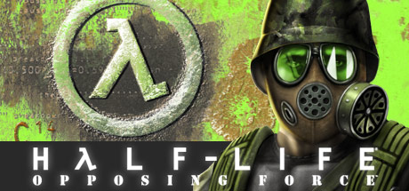
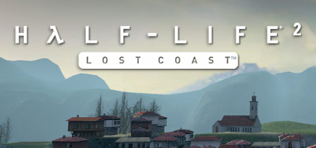
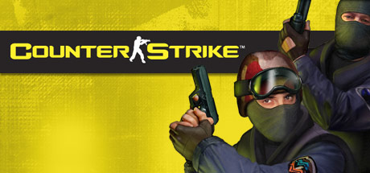
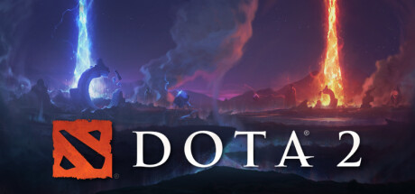
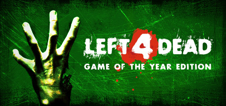
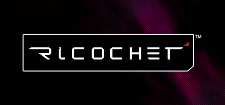
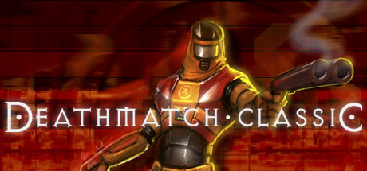

JUEGOS DE VALVE:
HALF-LIFE

Nombrado juego del año por más de 50 publicaciones, la ópera prima de Valve mezcla acción y aventuras con una tecnología galardonada con varios premios, en un mundo terriblemente realista en el que los jugadores deberán esforzarse por sobrevivir. También incluye un emocionante modo multijugador que te permite jugar contra amigos y enemigos de todo el mundo.
DESCARGA HALF-LIFE
HALF-LIFE:OPPOSING FORCE

Vuelve a las instalaciones de investigación de Black Mesa en calidad de especialista militar destinado a eliminar a Gordon Freeman. Vive una historia para un jugador desde un punto de vista totalmente distinto. Bátete con feroces rivales alienígenas y experimenta con armas nuevas. Nombrado juego del año según la Academy of Interactive Arts and Sciences.
DESCARGA HALF-LIFE:OPPOSING FORCE
HALF-LIFE:BLUE SHIFT

En Blue Shift, un juego creado por Gearbox Software y puesto a la venta por primera vez en 2001 como ampliación para Half-Life, volverás a las instalaciones de investigación de Black Mesa encarnando a Barney Calhoun, el guardia de seguridad que tantas veces le sacó a Gordon las castañas del fuego.
DESCARGA HALF-LIFE:BLUE SHIFT
HALF-LIFE:SOURCE

Galardonado con más de 50 premios de juego del año, el lanzamiento de Half-Life en 1998 supuso todo un hito para los juegos de acción. Half-Life: Source es una versión remasterizada digitalmente de este juego de PC aclamado por la crítica y que se convirtió en todo un éxito de ventas. Se ha mejorado mediante la tecnología Source para incluir más simulaciones físicas, mejores efectos y mucho más.
DESCARGA HALF-LIFE:SOURCE
HALF-LIFE 2

1998. HALF-LIFE supone un impacto en la industria de juegos con su combinación de acción frenética y narración continua y absorbente. El título de debut de Valve fue galardonado con más de 50 premios que lo consideraron el juego del año hasta convertirse en "El mejor juego para PC de la historia", galardón concedido por la revista PC Gamer, y ha vendido más de ocho millones de unidades en todo el mundo.
HOY. Todo el suspense, los desafíos y la carga emocional del original, aunados a un realismo sorprendente y una estupenda manejabilidad: Half-Life 2 abre las puertas a un mundo en el que la presencia del jugador influye en todo lo que lo rodea, desde el entorno físico hasta el comportamiento e incluso las emociones de amigos y enemigos.
El jugador vuelve a tomar la palanca del científico Gordon Freeman, quien se encuentra en una Tierra infestada por alienígenas, desposeída de todos sus recursos y en la que cada vez queda menos población. Freeman se ve envuelto en el papel nada envidiable de rescatar el mundo del mal que desencadenó en Black Mesa. Y mucha gente a la que aprecia cuenta con él.
DESCARGA HALF-LIFE 2
HALF-LIFE:LOAST COAST

Pensado en un principio como una sección del capítulo Autopista 17 de Half-Life 2, Lost Coast es un ejemplo de tecnología jugable que presenta la iluminación de alto rango dinámico en el motor Source.
HALF-LIFE:LOAST COAST
HALF-LIFE 2:EPISODE ONE

Half-Life 2 ha vendido más de 4 millones de copias en todo el mundo y recibido más de 35 galardones como mejor juego del año. Episode One es el primero de una serie de juegos que revelarán los acontecimientos posteriores al final de Half-Life 2 y te permitirán aventurarte más allá de Ciudad 17. Además, cuenta con dos escenarios para varios jugadores. No es necesario tener Half-Life 2.
DESCARGA HALF-LIFE 2:EPISODE ONE
HALF-LIFE 2:EPISODE TWO

Half-Life® 2: Episode Two es la segunda parte de la nueva trilogía creada por Valve que amplía la galardonada saga superventas Half-Life®.
Asumirás el papel del Dr. Gordon Freeman, visto por última vez escapando de Ciudad 17 con Alyx Vance en el mismo momento en que la Ciudadela entraba en erupción en medio de una tormenta de proporciones épicas. En Episode Two, tendrás que combatir a las fuerzas de la Alianza en tu afán de atravesar antes que ellos White Forest, con el fin de entregar unos datos de vital importancia robados de la Ciudadela al enclave de científicos de la resistencia que se refugian en él.
Half-Life® 2: Episode Two incorpora a la galardonada dinámica de juego de Half-Life nuevas armas, vehículos y engendros monstruosos.
DESCARGA HALF-LIFE 2:EPISODE TWO
HALF LIFE ALYX

Half-Life: Alyx es el regreso de Valve en realidad virtual a la serie Half-Life. Es la historia de una lucha imposible contra una cruel raza alienígena conocida como la Alianza que se desarrolla entre los acontecimientos de Half-Life y Half-Life 2.
Jugando como Alyx Vance, eres la única oportunidad de supervivencia de la humanidad. El control de la Alianza sobre el planeta desde el incidente de Black Mesa solo se ha fortalecido a medida que acorralan a los habitantes que quedan en las ciudades. Entre ellos se encuentran algunos de los mejores científicos de la Tierra: tú y tu padre, el Dr. Eli Vance.
Como fundadores de una resistencia incipiente, habéis continuado vuestra actividad científica clandestina, realizando investigaciones críticas y construyendo herramientas invaluables para los pocos humanos lo suficientemente valientes como para desafiar a la Alianza.
Todos los días, aprendes más sobre tu enemigo, y cada día trabajas para encontrar su punto débil.
DESCARGA HALF LIFE ALYX
COUNTER-STRIKE:SOURCE

LA NUEVA ENTREGA DEL JUEGO DE ACCIÓN EN LÍNEA NÚMERO 1 EN TODO EL MUNDO, Counter-Strike: Source combina la intensidad de las partidas por equipos, que le valió varios premios al título original, con la avanzada tecnología de Source™. Con sus vanguardistas gráficos, nuevos sonidos y un mayor dinamismo, Counter-Strike: Source no puede faltar en la colección de ningún entusiasta de los juegos de acción.
DESCARGA COUNTER-STRIKE:SOURCE
COUNTER-STRIKE:1.6

Disfruta del juego de acción en línea n° 1 en el mundo. Sumérgete en el fragor de la guerra antiterrorista más realista con este archiconocido juego por equipos. Alíate con compañeros para superar misiones estratégicas, asalta bases enemigas, rescata rehenes, y recuerda que tu personaje contribuye al éxito del equipo y viceversa.
DESCARGA COUNTER-STRIKE:1.6
COUNTER-STRIKE:GLOBAL OFFENSIVE

Counter-Strike: Global Offensive (CS:GO) amplía el juego de acción por equipos del que fue pionero cuando salió hace más de 20 años.
CS:GO incluye nuevos mapas, personajes, armas y modos de juego, y ofrece versiones actualizadas del contenido clásico de Counter-Strike (de_dust2, etc.).
«Counter-Strike sorprendió a la industria de los videojuegos cuando el insólito mod se convirtió en el juego de acción en línea para PC más jugado del mundo casi inmediatamente después de su lanzamiento en agosto de 1999», dijo Doug Lombardi, de Valve. «Durante los últimos 12 años, se ha mantenido como uno de los títulos más jugados del mundo, ha ocupado un papel protagonista en los torneos de videojuegos competitivos y ha vendido más de 25 millones de copias de la franquicia en todo el mundo. CS:GO promete ampliar la galardonada jugabilidad de Counter-Strike y ofrecérsela tanto a los jugadores de PC como a los de consolas de nueva generación y de Mac».
DESCARGA COUNTER-STRIKE:GLOBAL OFFENSIVE
DOTA 2

El juego más jugado en Steam, Cada día, millones de jugadores de todo el mundo entran en batalla como uno de los más de cien héroes de Dota. Y no importa si es su décima hora de juego o la milésima, siempre hay algo nuevo que descubrir. Con frecuentes actualizaciones que garantizan una evolución constante de jugabilidad, características y héroes, Dota 2 realmente ha cobrado vida propia.
Un campo de batalla. Infinitas posibilidades, Cuando se trata de variedad de héroes, habilidades y poderosos objetos, Dota no tiene límite. No hay dos partidas iguales. Cada héroe puede desempeñar varios roles, y hay multitud de objetos para ayudar a satisfacer las necesidades de cada partida. Dota no pone límites a tu forma de jugar, te da el poder de expresar tu propio estilo.
Todos los héroes son gratuitos, El equilibrio competitivo es la joya de la corona de Dota, y para garantizar que todo el mundo juegue en un campo de batalla equilibrado, el contenido principal del juego —como el vasto grupo de héroes— está disponible para todos los jugadores. Los fans pueden coleccionar objetos cosméticos para los héroes y divertidos complementos para el mundo en que estos habitan, pero todo lo necesario para jugar ya está ahí antes de que te unas a tu primera partida.
Trae a tus amigos y forma un equipo, Dota es complejo y evoluciona constantemente, pero nunca es tarde para unirse, Aprende los conceptos básicos jugando en modo cooperativo contra bots. Mejora tus habilidades en el modo de prueba de héroes. Entra en el sistema de emparejamiento basado en el comportamiento y la habilidad que se encarga de hacer que juegues con los jugadores adecuados en cada partida.
DESCARGA DOTA 2
THE LAB

Ambientado en un universo de bolsillo de Aperture Science, The Lab te permite disfrutar de la realidad virtual de muchas maneras diferentes en una sola aplicación.
DESCARGA THE LAB
DAY OF DEFEAT

Enrólate en este emocionante combate entre las Fuerzas Aliadas y del Eje ambientado en los campos de batalla europeos de la Segunda Guerra Mundial. Tus amigos y tú podréis elegir entre infantería ligera, pesada o de asalto, y francotirador o ametrallador. En cualquier caso, dispondréis de un arsenal único compuesto por armas de la época. Las misiones se basan en hazañas históricas clave. Y, en el fragor de la batalla, tendréis que colaborar con vuestro comando para superar los retos de cada misión.
DESCARGA DAY OF DEFEAT
DAY OF DEFEAT: SOURCE

Day of Defeat te ofrece la acción en línea más trepidante, ambientada en la Europa de la Segunda Guerra Mundial. Conviértete en soldado de infantería, francotirador o ametrallador, entre muchos otros personajes. En Day of Defeat: Source encontrarás gráficos mejorados y un diseño en el que se aprovecha toda la potencia de Source, la nueva tecnología de motor de Valve.
DAY OF DEFEAT: SOURCE
PORTAL

Portal™ es la nueva aventura para un solo jugador de Valve. Ambientado en los misteriosos laboratorios de Aperture Science, Portal ha sido calificado como uno de los juegos más innovadores de los últimos tiempos y ofrece incontables horas de rompecabezas nunca vistos.
El juego está diseñado para cambiar radicalmente el modo en que los jugadores enfocan, sopesan y reaccionan a las circunstancias en un entorno determinado, al igual que la pistola antigravedad abrió un nuevo mundo de posibilidades a la hora de manipular objetos.
Los jugadores deben resolver rompecabezas y desafíos basados en las leyes físicas abriendo portales y desplazando objetos, o incluso sus propios avatares, a través del espacio.
DESCARGA PORTAL
PORTAL 2

Portal 2 continúa con esa fórmula ganadora consistente en una innovadora mecánica de juego, historia y música que condujeron al Portal original a ganar más de 70 galardones y lo convirtieron en un nuevo mito de la industria.
En el modo de un jugador de Portal 2 conoceremos a un nuevo elenco de personajes, gran cantidad de innovadores puzles y un número mucho mayor de enrevesadas salas de pruebas. Los jugadores podrán explorar zonas de Aperture Science Labs nunca vistas anteriormente y volverán a encontrarse a GLaDOS, ese compañero computerizado, y en ocasiones con tendencias asesinas, que los guio a lo largo del juego original.
El modo cooperativo para dos jugadores tiene su propia campaña totalmente independiente, con una historia única, salas de pruebas y dos nuevos personajes con los que podremos jugar. Este nuevo modo obliga a los jugadores a reconsiderar todo lo que creían saber acerca de los portales. Para tener éxito no solo deberán trabajar codo con codo, sino que también tendrán que pensar de forma cooperativa.
DESCARGA PORTAL 2
LEFT 4 DEAD

De la mano de Valve®, creadores de Counter-Strike®, Half-Life® y otros muchos juegos, llega Left 4 Dead™, una nueva aventura para PC y Xbox 360 que te mete en la piel de uno de los cuatro «supervivientes» en su pugna épica contra hordas de zombis y sus terroríficas variedades mutantes especiales.
Ambientado justo tras el estallido del largamente anunciado Apocalipsis zombi, la dinámica de juego cooperativa de Left 4 Dead se desarrolla en cuatro extensas «películas» que guían a los supervivientes por los tejados de metrópolis abandonadas, por pueblos abandonados y bosques sumidos en la oscuridad, todo para que consigas escapar del epicentro devastado lleno de enemigos infectados. Cada «película» consta de cinco grandes mapas y permite participar a entre uno y cuatro jugadores, poniendo énfasis en las estrategias y objetivos de equipo.
Utiliza la nueva tecnología bautizada como «Director de IA» para generar por procedimiento una experiencia diferente cada vez que se juega. El Director ajusta la frecuencia y ferocidad de los ataques zombis a tu rendimiento, colocándote en el centro de una película de terror como las de Hollywood, muy dinámica pero no abrumadora.
DESCARGA LEFT 4 DEAD
LEFT 4 DEAD 2

Ambientado en el apocalipsis zombi, Left 4 Dead 2 (L4D2) es la esperadísima secuela del galardonado Left 4 Dead, el juego cooperativo número 1 de 2008.
Este FPS cooperativo de acción y terror os llevará a ti y a tus amigos por las ciudades, pantanos y cementerios del Sur Profundo, desde Savannah hasta Nueva Orleans, a lo largo de cinco extensas campañas.
Jugarás como uno de los cuatro nuevos supervivientes, armado con un amplio y devastador arsenal de armas clásicas y mejoradas. Además de las armas de fuego, también tendrás la oportunidad de masacrar a los infectados con diversas armas de combate cuerpo a cuerpo, desde motosierras hasta hachas, e incluso una mortífera sartén.
Pondrás a prueba estas armas contra tres espantosos y formidables nuevos infectados especiales (o jugarás como ellos en el modo Enfrentamiento). También te encontrarás con cinco nuevos infectados comunes no comunes, incluyendo a los aterradores embarrados, AI Director 2.0 lleva la jugabilidad frenética y repleta de acción de L4D a un nivel superior. Esta versión mejorada de Director tiene la capacidad de modificar por procedimientos la meteorología en la que luchas y las rutas que tomas, además de adaptar la población enemiga, los efectos y los sonidos para ajustarlos a tus acciones. L4D2 promete una experiencia satisfactoria, única y desafiante en cada partida, personalizada de acuerdo con tu estilo de juego.
DESCARGA LEFT 4 DEAD 2
RICOCHET

Juego futurista de acción que pondrá a prueba tu agilidad y tu puntería. Ricochet te permite jugar solo o con tus amigos en diversos campos de batalla futuristas.
DESCARGA RICOCHET
TEAM FORTRESS CLASSIC

Estás ante uno de los juegos de acción en línea más populares de toda la historia. Team Fortress Classic incorpora más de nueve tipos de personaje (desde el médico al espía, pasando por el experto en explosivos) y los lanza a un combate en línea único. Cada personaje tiene armas, accesorios y cualidades propias que aportar a sus equipos al competir en línea en diferentes modos de juego.
DESCARGA TEAM FORTRESS CLASSIC
TEAM FORTRESS 2

¡El juego gratuito más valorado de todos los tiempos!, Uno de los juegos de acción online más popular, Team Fortress 2, publica constantemente actualizaciones gratuitas: nuevos modos de juego, mapas, equipamiento y lo que es más importante, sombreros. Nueve clases diferentes proporcionan un enorme abanico de habilidades tácticas y personalidades y se prestan a una gran variedad de habilidades del jugador.
¿Nuevo en Team Fortress? ¡No te preocupes!, No importa cuál sea tu estilo o tu experiencia, tenemos un personaje para ti. El detallado entrenamiento y los modos de práctica individual te ayudarán a pulir tus habilidades antes dar el salto a uno de los muchos modos de juego de TF2, de entre los que se incluyen Capturar la Bandera, Puntos de Control, Carga Explosiva, Arena, Rey de la Colina y muchos más.
DESCARGA TEAM FORTRESS 2
DEATHMATCH CLASSIC

Disfruta del juego rápido para varios jugadores con Deathmatch Classic (alias DMC). DMC es todo un homenaje de Valve a id software y te hará trabajar a fondo con los lanzacohetes y los reflejos en escenarios futuristas.
DESCARGA DEATHMATCH CLASSIC
Ir a la pagina:
1 2 3 4 5 6 7